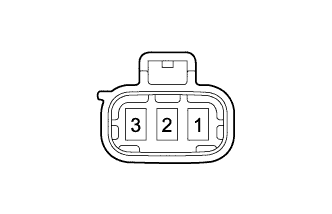
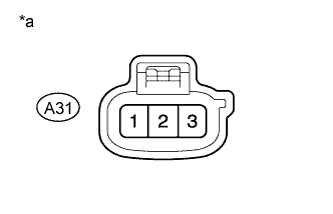
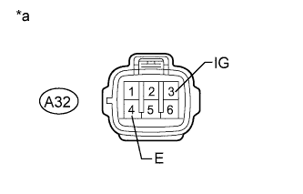

WIPER AND WASHER SYSTEM > Headlight Cleaner Motor and Relay Circuit |
| 1.PERFORM ACTIVE TEST USING INTELLIGENT TESTER (HEADLIGHT CLEANER OPERATION) |
Using the intelligent tester, perform the Active Test (Click here).
| Tester Display | Test Part | Control Range | Diagnostic Note |
| Head Light Cleaner | Headlight cleaner operation | ON/OFF | - |
|
| ||||
| OK | ||
| ||
| 2.INSPECT HEADLIGHT CLEANER MOTOR AND PUMP ASSEMBLY |
|  |
Remove the headlight cleaner motor (Click here).
Apply battery voltage to the headlight cleaner motor and check the operation of the headlight cleaner motor.
| Measurement Condition | Specified Condition |
| Battery positive (+) → Terminal 2 Battery negative (-) → Terminal 1 | Headlight cleaner motor operation is normal |
|
| ||||
| OK | |
| 3.CHECK HARNESS AND CONNECTOR (HEADLIGHT CLEANER MOTOR AND PUMP ASSEMBLY - BATTERY) |
|  |
Disconnect the A31 headlight cleaner motor connector.
Measure the voltage according to the value(s) in the table below.
| Tester Connection | Condition | Specified Condition |
| A31-2 - Body ground | Always | 11 to 14 V |
| *a | Front view of wire harness connector (to Headlight Cleaner Motor and Pump Assembly) |
|
| ||||
| OK | |
| 4.CHECK HARNESS AND CONNECTOR (HEADLIGHT CLEANER CONTROL RELAY - BATTERY AND BODY GROUND) |
|  |
Disconnect the A32 headlight cleaner control relay connector.
Measure the voltage according to the value(s) in the table below.
| Tester Connection | Switch Condition | Specified Condition |
| A32-3 (IG) - Body ground | Engine switch on (IG) | 11 to 14 V |
| A32-3 (IG) - Body ground | Engine switch off | Below 1 V |
Measure the resistance according to the value(s) in the table below.
| Tester Connection | Condition | Specified Condition |
| A32-4 (E) - Body ground | Always | Below 1 Ω |
| *a | Front view of wire harness connector (to Headlight Cleaner Control Relay) |
|
| ||||
| OK | |
| 5.CHECK HARNESS AND CONNECTOR (HEADLIGHT CLEANER MOTOR AND PUMP ASSEMBLY - HEADLIGHT CLEANER CONTROL RELAY) |
Disconnect the A32 headlight cleaner control relay connector.
Disconnect the A31 headlight cleaner motor connector.
Measure the resistance according to the value(s) in the table below.
| Tester Connection | Condition | Specified Condition |
| A31-1 - A32-6 (PB) | Always | Below 1 Ω |
| A32-6 (PB) - Body ground | Always | 10 kΩ or higher |
|
| ||||
| OK | ||
| ||